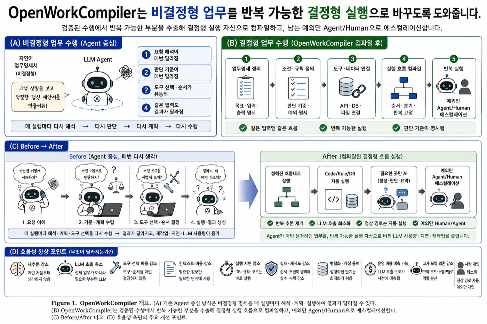
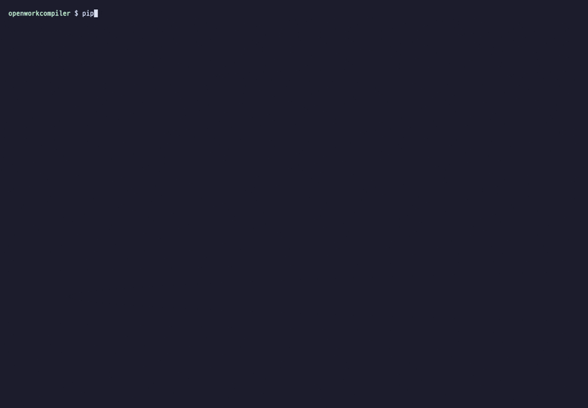

비결정형 업무 → 결정형 실행

어떻게 동작하나요
- WHAT 정의 —
$ow-define(grill-me 인터뷰)으로 메모·노트·이전 완성물에서TASK.md와BEHAVIOR.md를 만듭니다. 프롬프트 지식 불필요. - 에이전트 1회 수행 — Codex가 그대로 일합니다. Zero-code 프록시가 모든 턴(모델·토큰·도구 결과)을 TraceIR로 캡처합니다.
- 사람이 품질 확인 — 결과가 곧 WHAT임을 승인하면 규칙이 굳어집니다.
- LLM 컴파일 — 트레이스 → Work IR →
build/<work>/:handlers/*.py,rules/,models/ml|slm/,prompts/, 그리고 HOW를 담은<work>.work. - 벤치마크 — 같은 세션을 재실행해 결과 일치·토큰·속도를 모델별 원장으로 비교합니다.
- 하이브리드 실행 — 앞단 에이전트가 새 요청의 파라미터를 바인딩하고, code 계층은 토큰 0으로, 합성 스텝만 에이전트로 에스컬레이션합니다.
Codex TUI 안에서 그대로

합성 화면이 아닌 실제 Codex 세션입니다. 초보자가 $ow-define으로 업무를 정의하는 녹화는 examples/cases에 있습니다.
실측 결과
| 업무 사례 | 에이전트 1회 (gpt-5.6-sol) | 컴파일된 빌드 재실행 | 결과 |
|---|---|---|---|
| 고객 계약 갱신 제안 | 160,876 토큰 · 134 s | 24,819 (−85%) · 7.1 s | 270석 · $116,640 · 7/7 재현 |
| 인보이스/환불 승인 | 280,023 토큰 · 114 s | 21,999 (−92%) · 6.0 s | 중복결제 전액 환불 → 재무 승인 대기 |
| 제조 품질 이상 대응 | 138,200 토큰 · 142 s | 32,661 (−76%) · 12.7 s | 야간 5.5% 이상, 보정 만료 센서 제외 · 5/5 재현 |
| 보안/운영 장애 분류 | 159,640 토큰 · 88 s | 21,081 (−87%) · 5.3 s | 권한상승 → 즉시 온콜, 변경 연관 |
| 새 고객 하이브리드 실행 (CUST-1002) | Codex 단독 32,572 · 83 s | 26,481 · 40.2 s (2.1×) | 앞단 에이전트 + code 6스텝 + 에스컬레이션 2 |
모든 수치는 저장소의 examples/에 transcript·트레이스·빌드·BENCHMARK.md(토큰 원장)로 재현 가능하게 들어 있습니다.
시작하기
# 0. 한 줄 설치 (pipx) → owc 명령
pipx install "git+https://github.com/baryonlabs/workcompiler.git" && owc version
# 1. 프록시 + Codex (ChatGPT 로그인 그대로, 코드 수정 없음)
git clone --recurse-submodules https://github.com/baryonlabs/workcompiler.git && cd workcompiler
python3 -m uvicorn adapters.proxy.server:app --port 8787 &
codex # $ow-define · $ow-compile-work · $ow-traces · $ow-compile-trace · $ow-bench
# 2. 셸에서 직접
python3 -m core.openworklang compile examples/quality_analysis.work # .work → build/quality_analyst/
python3 -m core.build bench build/<work> # 에이전트 vs 빌드
python3 -m core.build run build/<work> --request "…" --escalate codex # 앞단 에이전트 + 빌드OpenWorkCompiler (English)
Compile verified AI agent work into deterministic, repeatable execution. Humans define the WHAT (TASK.md, BEHAVIOR.md via the $ow-define interview); an agent such as Codex does the work once through a zero-code proxy that captures every turn; a human confirms the quality; the compiler lowers the verified session into build/<work>/ — Python handlers, rules, ML/SLM training packages, prompt contracts and an editable OpenWorkLang .work spec stating the HOW and its escalation limits. A front agent binds parameters for new requests and escalates only the synthesized steps.
Measured
Four business cases driven from a beginner's raw materials: −76…−92% tokens and 7–19× faster on replay, identical decisions and deliverables. Hybrid run for a new customer: 2.1× faster than Codex alone.
Zero-code proxy
Transparent passthrough for the OpenAI Responses API and the ChatGPT Codex backend; per-step model, tokens (cached), tool results captured into TraceIR.
Token ledger
Every step: which model spent how many tokens when recorded vs. what executes it after compilation (code / rule / model); ledger.jsonl tracks the shift from frontier → SLM → code.
OpenWorkLang
The .work language (parser, compiler, spec) lives in baryonlabs/openworklang and is vendored as a submodule.
적용 사례를 수집하고 있습니다 · We are collecting adoption cases
OpenWorkCompiler를 실제 업무에 적용한 사례(WHAT, 컴파일 결과, 전후 토큰·시간, 남은 에스컬레이션)를 모읍니다. 허락하에 examples/cases/에 소개합니다. / Applied it to a real task? Tell us what compiled and what still escalates.